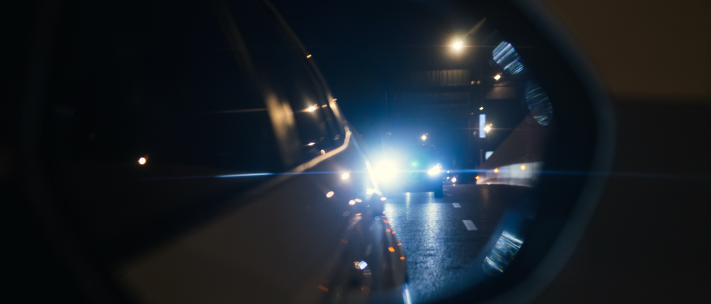
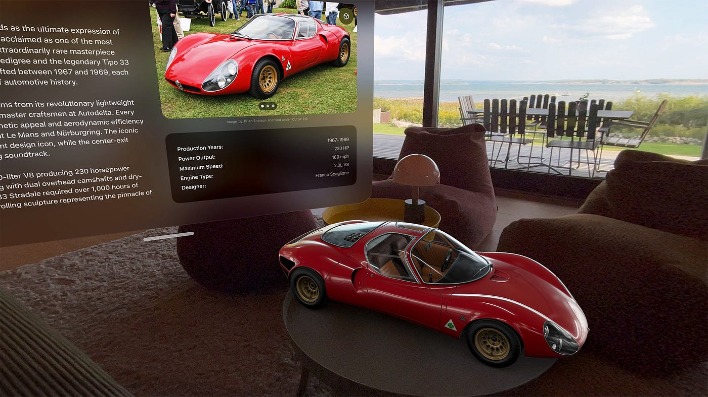
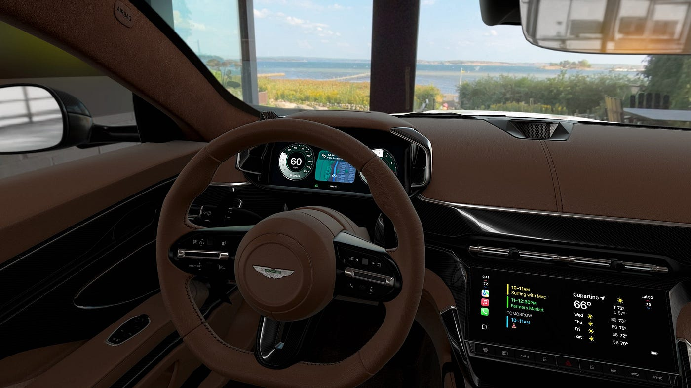
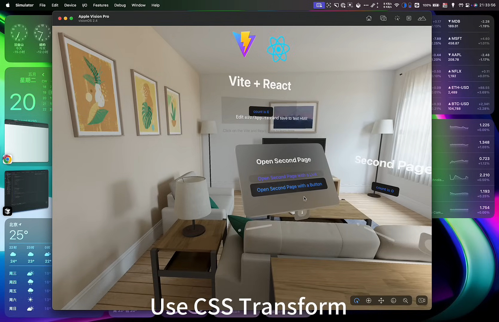

The Next Train 下一班列车

This article shares observations from the spatial-vision track at Let's Vision. Personal opinions only — not the conference's official position.
本文主要分享 Let's Vision 中与空间主题相关的所见所闻，文中带有个人观点，非会议目的或观点。
Let's Vision is a product showcase. Its organizer, SwiftGG, has long worked to grow a tech community centered on Apple's ecosystem. Attendees range from independent creators, to brands looking for partnerships and exposure, to evangelists from larger companies. The conference is split into two tracks — AI and Spatial Vision. The Spatial Vision room was about half full; the AI room was nearly packed. This article only covers the spatial vision side.
Let's Vision 是一场产品秀，主办方 SwiftGG 长期探索并推动以 Apple 生态为核心的技术社区发展。参会者既有自媒体博主，也有寻求合作与曝光的品牌方，还有来自大公司的技术布道者。此次会议分为 AI 与空间视觉两个主题：空间视觉分会场上座率约一半，而 AI 会场几乎座无虚席。本文只讨论与空间视觉相关的内容。
Where are we headed 驶向哪里
While most people focus on AI applications and worry about getting left behind, another group is positioning early — trying to grab a seat on "the next train." Different teams, with different products, are showing their own paths from 2D interaction toward 3D interaction.
当大多数人都在关注 AI 应用、思考如何不掉队时，还有一部分人在提前布局，争取拿到"下一班列车"的入场票。不同团队通过不同产品，展示了从二维交互走向三维交互的探索路径。
A power upgrade 动力升级
2025 was a year of major leaps for multimedia models. Models like NanoBanana and Seedance pushed image generation from "wax-figure" territory toward photorealism with widely-accepted aesthetics — even fueling waves of short drama and comic creation.
2025 年可以说是多媒体模型大幅跃迁的一年。以 NanoBanana、Seedance 为代表的模型，让图像生成从"蜡像感"快速走向写实，具备更广泛认可的审美，甚至带动了短剧和漫剧创作热潮。
These models iterate so quickly partly because diffusion is easier to ship than autoregression, and partly because the big foundation labs have huge stockpiles of (or indexable access to) audio/video data to train and tune on.
这类模型迭代之所以如此迅速，一方面是扩散路线相较自回归更容易落地，另一方面是大模型厂商已积累或可索引的大规模音视频数据，为训练与优化提供了充足基础。
In 3D, however, the content carrier is usually a model file with full spatial semantics. Beyond geometry and material maps, it also encodes lighting, skeletons, animations, collision bodies — everything tied to interaction and physical feedback. Each entity carries far more information than its counterpart in a video.
而在 3D 空间里，内容载体通常是具备完整空间语义的模型文件。它不仅描述几何结构和材质贴图，还包含光照、骨骼、动画、碰撞体等与交互和物理反馈直接相关的信息，因此单个实体的信息密度远高于视频中的对应对象。
Because of that, delivering a convincingly immersive experience on 3D devices still depends on continued progress in 3D model capability itself.
也正因如此，若要在 3D 设备上提供逼真的沉浸体验，前提仍是 3D 模型能力本身的持续进步。
3D-related models today fall roughly into three categories: 3D asset generation models, video models, and world models.
目前 3D 相关模型大致分为三类：3D 素材生成模型、视频模型、世界模型。
- Asset generation models: several startups (Meshy, Tripo, hyper3d) are already in this space. They produce 3D models from text or images and rig skeletal animation. In practice they're still early — quality ceilings are low and fine-grained controllability is weak. The bottleneck is the asset generation capability itself.
- World models: models that understand the rules of the world and make their behavior or outputs obey those rules — hugely meaningful for embodied intelligence.
- Video models: video as the carrier, content close to real physics. If real-time generation becomes possible, they could move past "watching" toward something closer to interacting with a virtual world.
- 素材生成模型：已有多家创业公司布局，如 Meshy、Tripo、hyper3d。这类产品可通过文字或图片生成 3D 模型并绑定骨骼动画。实测来看仍处于早期阶段：质量上限不高、细节可控性不足，瓶颈仍在素材生成能力本身。
- 世界模型：能够理解世界规律，并使行为或产物遵循这些规律，对具身智能意义重大。
- 视频模型：以视频为载体，内容贴近真实物理逻辑；若能实现实时生成，就有机会在"观看"基础上进一步带来与虚拟世界交互的近真实体验。
Worth noting: on March 30, the Chinese world model GigaWorld-1 surpassed NVIDIA's Cosmos (released late 2024) on relevant benchmarks — worth keeping an eye on.
值得一提的是，3 月 30 日，国产世界模型 GigaWorld-1 在相关榜单上超越了英伟达 2024 年底发布的 Cosmos，感兴趣可以关注。
Even as model ceilings keep climbing, the core competition for 3D products is still material quality and interaction detail. 3D products are visually unforgiving. Polished visuals and high-quality modeling are normally very expensive, but AI lets developers shift more time from "build and debug" to "quality and detail polish" — concentrating their energy on the product itself.
虽然模型能力在不断刷新上限，但 3D 产品竞争的核心，依然是质感与交互细节。3D 产品对视觉效果高度敏感。精细画面和高质量建模通常成本很高，但 AI 的出现让开发者能把更多时间从"搭建和调试"转向"质量与细节打磨"，把精力更集中地投入产品本身。
In a 3D scene, visual feedback and interaction directly determine whether users want to keep using the thing. The moment feedback feels rough or interaction feels stiff, users feel powerless, can't get immersed, and churn out fast.
在 3D 场景中，视觉反馈和交互体验直接影响用户是否愿意继续使用；一旦反馈粗糙或交互生硬，用户很容易产生无力感，难以沉浸，并迅速流失。
AI today still struggles to reliably produce high-quality 3D models (Tripo and Meshy both have clear ceiling and stability issues), so high-quality models and interactions still require long, manual polishing. AI's value mostly shows up in shortening dev cycles and making more room for that polishing work.
现阶段 AI 仍难以稳定产出高质量 3D 模型（如 Tripo、Meshy 的结果上限和稳定性都有限），因此高品质模型与交互仍需要长期人工打磨，而 AI 的价值主要体现在提升开发效率、释放打磨空间。
Caradise's work demonstrates this. They've stayed grounded in passion and long-term thinking, using AI for productivity gains while continuing to pour effort into model and interaction details — consistently shipping high-quality 3D experiences. Their morning talk hit hard: not only could you change a car's size and color in real time through AI dialogue, the most striking thing was the material quality and interaction smoothness.
Caradise 的实践也印证了这一点：他们始终以热情与长期主义为核心，在 AI 提效的基础上，把精力持续投入到模型与交互细节的打磨中，稳定输出高质量的 3D 产品体验。在上午的分享中，Caradise 带来了很强的冲击力：它不仅支持通过 AI 对话实时调整汽车的尺寸、颜色等属性，更令人印象深刻的是模型质感与交互流畅度。
In the demo, a car "lands" from mid-air and the slight vibration feedback at impact clearly conveys the mechanical sense of touching the ground. It then cuts in real time to the inside view, starts the car with a convincing engine sound, and the immersion jumps. The visuals are still distinguishable from reality, but the lighting and texture work are very polished.
演示里，一辆汽车从空中"落地"时的轻微震动反馈，清晰传达了接触地面的力学感；随后又实时切入车内视角并启动车辆，配合逼真的引擎声，显著增强了沉浸感。虽然画面与现实仍有差距，但其光影与纹理表现已经达到很高完成度。


Laying rails together 联合铺轨
Generally, for an industry to accelerate, you first need to lower the barrier to entry. That brings in more people, drives more breakthroughs, drops costs further, and feeds a virtuous loop of "more players in → industry keeps accelerating."
一般来说，行业要加速发展，首先需要降低入场门槛。这样会吸引更多人加入，带来更多技术突破，进一步降低整体成本，最终形成"更多玩家参与 — 行业持续加速"的正循环。
ByteDance's Pico tech team is targeting developers with products like WebSpatial, helping them move quickly from a Web App to a Vision Pro 3D app. Developers (or AI) just add attributes to HTML in a non-destructive way, and elements pick up 3D rendering inside Vision Pro.
字节 Pico 旗下技术团队正在面向开发者布局，推出了 WebSpatial 这样的产品，帮助开发者从 Web App 快速过渡到 Vision Pro 3D 应用。开发者或 AI 只需以非破坏方式为 HTML 增加属性，就能让元素在 Vision Pro 中呈现 3D 效果。

As more infrastructure like this appears, it pulls developers in: more tech breakthroughs on one side, and on the other, pressure on hardware vendors to keep improving the experience.
当更多类似技术基建出现后，会对开发者形成明显吸引力，推动更多人加入 3D 生态：一方面带来更多技术突破，另一方面也会倒逼设备厂商持续优化体验。
Speed bumps 提速瓶颈
Another striking experience came from QiongJie YingChuang. They shot spatial video on a binocular fisheye cinema camera, and watching it on Vision Pro felt very different from a flat display:
另一个让人印象深刻的体验来自穹界影创。他们使用双目鱼眼镜头电影机拍摄空间视频，佩戴 Vision Pro 观看时，与平面设备观感差异明显：
- The team first corrects the wide-angle footage toward a near-standard focal length (~40mm-60mm), so what you see in the headset is closer to natural human vision.
- When someone in the frame walks toward you, the sense of presence sharpens — you really feel like someone is approaching.
- You don't have to hold a fixed posture to "match" the device; gaze and attention move together naturally, much closer to how you observe in real life.
- 团队先将广角素材校正为接近标准镜头（约 40mm-60mm）的画面，因此在设备中的观看感受更接近人眼自然视角。
- 当画面中的人物向前靠近时，临场感明显增强，容易产生"有人正走近自己"的真实感。
- 观看时无需刻意保持固定姿态来配合设备，视角与注意力可以自然联动，整体体验更接近现实观察。
But there are still real limits:
但目前仍有一些不足：
- Even 16K video gets blurry when you scrutinize details. Camera sensors still trail the eye, and panoramic viewing magnifies that softness.
- Files are massive — 10 minutes of raw can hit tens of TB — pushing hard on production, storage, processing, transmission, and playback.
- Capture is expensive: the Canon binocular rig starts around ¥10k+, a real barrier for short-form creators.
- 16K 视频在观察细节时仍会出现模糊。一方面是相机传感器仍不及人眼，另一方面是全景观看会放大这种模糊感。
- 视频体量极大，对制作、存储、处理、传输、播放等环节都提出了很高的性能与成本要求，10 分钟 RAW 视频可能达到数十 TB。
- 视频录制成本较高，佳能双目相机约万元起步，对短视频创作者而言门槛明显。
To clear these, we need both video codec progress and hardware progress.
可以看到，要克服以上限制，需要同时期待视频编解码技术和硬件技术进步。
- The new AV1 codec (which won an Emmy in TV engineering tech in late 2025) gives both higher compression and better encode/decode efficiency at less quality loss.
- We also need to push these huge payloads to 3D devices wirelessly without overloading them — which touches chips and network transmission together.
- 例如新编解码标准 AV1（2025 年底获艾美奖电视工程技术类奖项），在减少画质损失的同时，带来了更高压缩率和更高编解码效率。
- 同时，也需要将大体量信息通过无线方式快速传输到 3D 设备，且不过载，这可能涉及芯片与网络传输等多方面的迭代。
Overall, this conference showed both the present state and the imagined future of 3D in the AI era — its goals, its struggles, its possibilities. The road forward is likely long. Different teams will keep grinding in their own corners. Only when the key pieces line up does the industry actually enter true acceleration.
总的来说，这场会议展现了 AI 时代下 3D 技术的现状、目标、困境与想象。这个行业的发展大概率仍是一个相对漫长的过程，不同团队会在各自的小方向持续推进；当关键要素逐步齐备后，行业才可能进入真正的加速期。